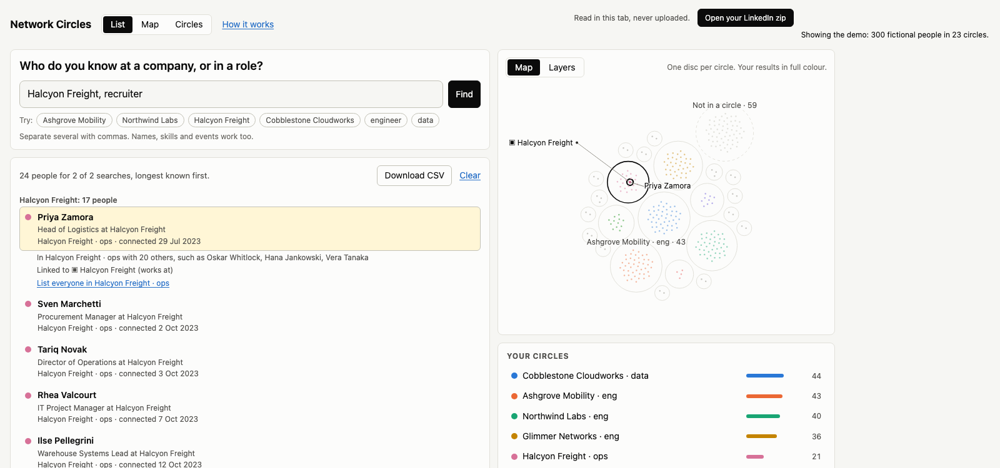

Who do you already know at the company you want?
Type the companies or roles you're aiming for. You get the people you're already connected to there, which part of your network each one comes from, and how long you've known them. That's who to ask for an introduction.
Your LinkedIn files are read inside your browser. Nothing is uploaded, and nothing is stored.

What you get
A list per company or role
Everyone you're connected to who works there or has that job title, the people you've known longest first.
Where each person comes from
Their circle: the former employer, client or event that put them in your network. It tells you how you know them.
A spreadsheet to work from
Download the list as a CSV and plan your messages. It's built in your browser, like everything else.
Get your own list in four steps
The only waiting is for LinkedIn to prepare your data. Use a computer: LinkedIn doesn't offer the download on its phone app.
-
Ask LinkedIn for your data
On linkedin.com, click Me, then Settings & Privacy, Data privacy, Download your data. Choose the larger archive and click Request archive.
About 2 minutes. LinkedIn emails you when it's ready, within 24 hours.
-
Download it
Open the link in LinkedIn's email and download the zip file. There's no need to unzip it.
The link in the email works for 72 hours.
-
Open the files here
Open Network Circles, click Open your LinkedIn zip and pick the zip you downloaded. You can also drag it onto the page.
10 to 30 seconds the first time, depending on your connection, while your browser loads the tool.
-
Type the companies or roles you're aiming for
Type them in the search box at the top, separated by commas. Click a name to see their circle and how you're connected, or download the list.
Seconds.
Waiting for LinkedIn's email? Try the sample network to see how the results work.
Your data stays with you
What happens to your files
- Your browser reads them on your computer. They are never uploaded, here or anywhere else.
- There's no account and no server that could keep a copy. Nothing about your network is saved, not even in your browser; the only thing it remembers is that you've seen its short introduction.
- From the zip, only the files the tool uses are opened. Your messages and everything else in the archive are never even unpacked.
- Close the tab and it's all gone.
What the page does download
- Its own code, from GitHub Pages, and a Python runtime (Pyodide) from the jsDelivr CDN, which runs the analysis in your browser.
- That's code coming to you; none of your data goes back.
- The code is open: you can read it on GitHub or run it on your own machine.
- An automated test opens the tool with an export, records every request the page makes, and fails if any of them carries data.
What it can't tell you
- Only people you're connected to. LinkedIn's export doesn't include who your connections know, so introductions through a friend of a friend can't be listed.
- No locations, and nothing about how often you talk to someone: the export doesn't contain either.
- Company names are matched as people typed them on their profiles. Spellings are merged where they're clearly the same company, but a renamed company may need its old name too.
- Circle names are a best guess from the most common company and role in each group.
Questions
Which files do I need?
Just the zip LinkedIn sends you. The tool reads Connections.csv from it for the list, and Positions.csv, your own work history, to add the companies you've worked at to the map. If you've already unzipped it, select all the CSV files in the folder instead.
My download has no Connections.csv
At least one person has reported an archive without it. Request your data again and pick Connections on its own; LinkedIn says that can take up to 48 hours.
Can I use it on my phone?
You can try the sample network on a phone. For your own data you need a computer, because LinkedIn only offers the data download there.
Is this made by LinkedIn?
No. It's an independent open-source project that reads the files LinkedIn lets you download about yourself.